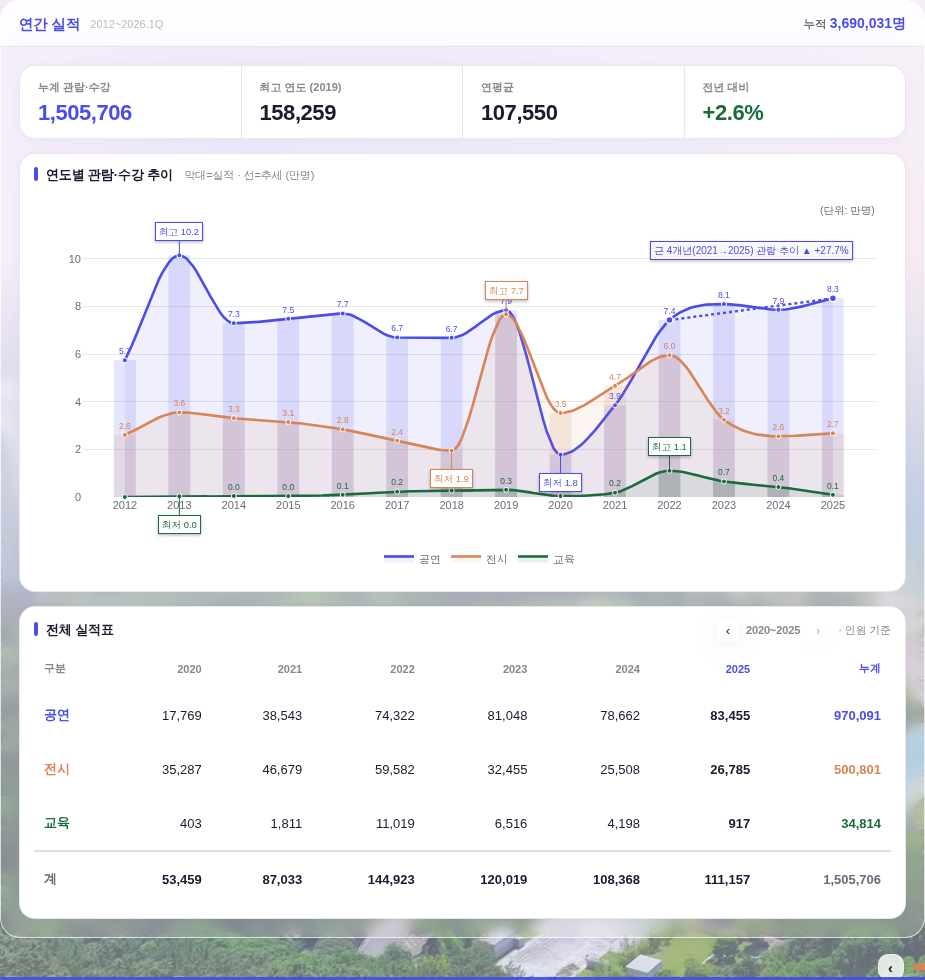
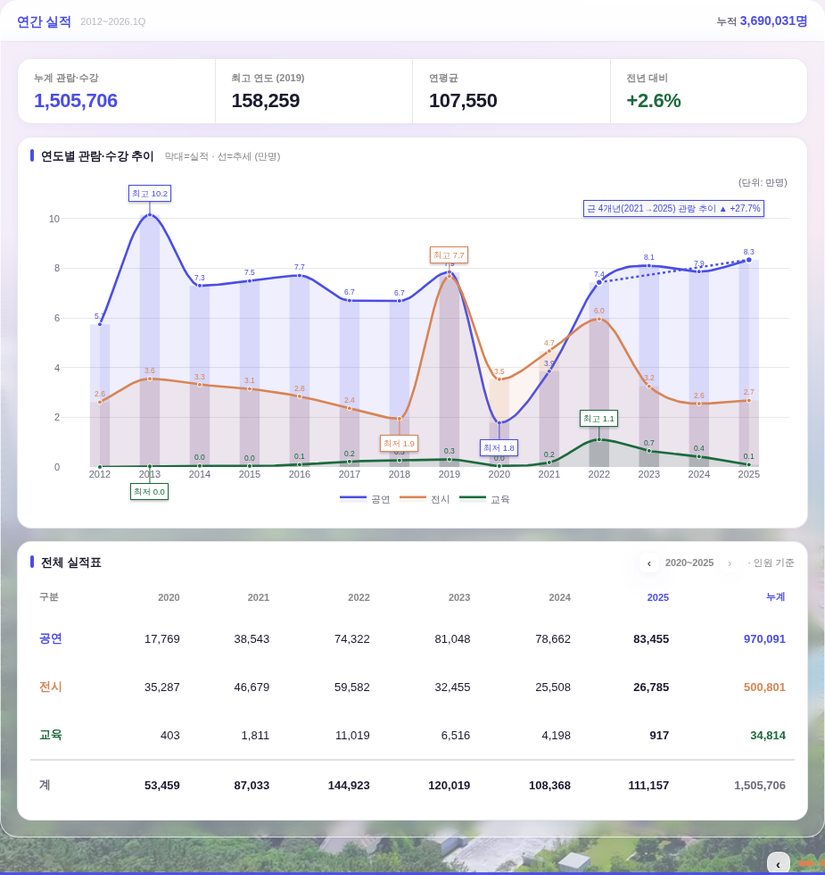
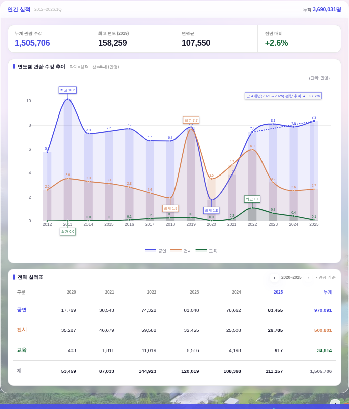
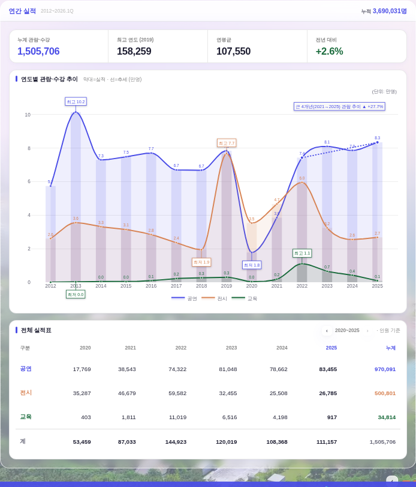
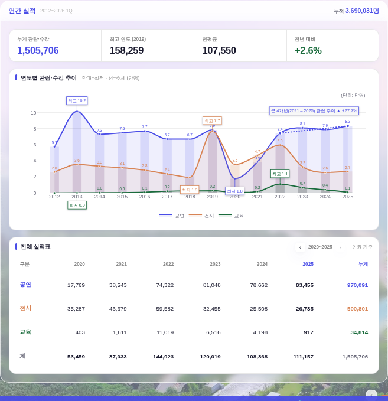
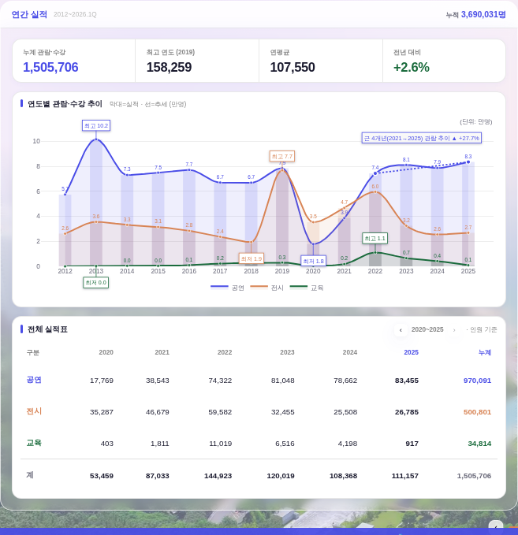
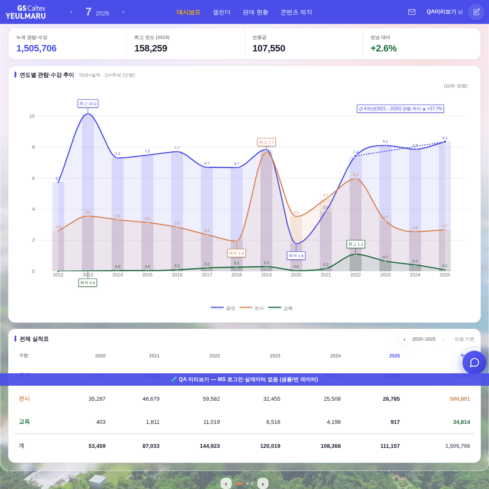
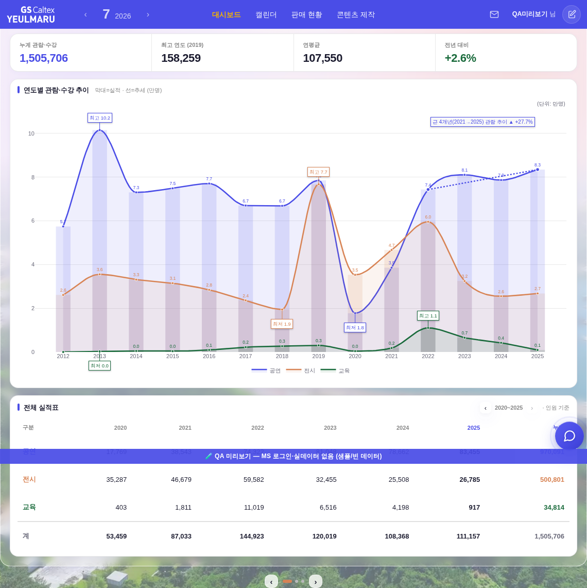

운영자 지적: “차트가 쭈그라들게 보인다 · 가로가 비어있음”.
원인은 차트 카드 안쪽의 죽은 여백이었다. 카드 크기는 그대로인데 그 안에서 실제로 그림이 그려지는 플롯이
전체 높이의 22%를 아래 빈 가로 띠에 뺏기고 있었다(1920 화면 실측 · 컨테이너 399px 중 88px).
범례 y:-0.18이 플롯 높이 비례값이라 눈금 라벨보다 훨씬 아래로 내려갔고, Plotly가 그만큼 하단 마진을 자동 확장한 결과다.
좌우도 l:56 + r:22 = 78px로 눈금값(“10”) 실폭보다 넉넉했다.
→ 대시보드 인라인 차트(pfx==='yrm')만 마진을 실측치로 조이고, 범례 간격을 픽셀 고정으로 바꿨다.
모달(사업 결과 비교 · pfx==='yr')은 종전 값 그대로 무접촉.
| 화면 | 차트 컨테이너 | 플롯(전) | 플롯(후) | 아래 빈 띠 | 플롯 높이 |
| 1920×1080 | 873 × 399 | 795 × 261 | 817 × 305 | 88 → 62px | +16.9% |
| 1440×900 | 872 × 502 | 794 × 348 | 816 × 408 | 104 → 62px | +17.2% |
| 1180×900 | 1088 × 560 | 1010 × 397 | 1032 × 465 | 113 → 63px | +17.1% |
| 공통 | 무변 | 좌 56→42 · 우 22→14 · 상 50→32 | — | 가로 +22px | |








legend.y 고정값 -0.18(플롯 높이 비례) → _yrmLegY(h)로
플롯 아래 22px 픽셀 고정. _bizFitViewport가 높이를 줄일 때 relayout에 범례 y도 같이 실어
어떤 높이에서도 간격이 변하지 않는다(눈금 라벨↔범례 실측 7px 유지).t 50→32 · l 56→42 · r 22→14 · b 48→52.
상단 (단위: 만명) 주석도 y 1.07→1.02로 같이 붙여 잘림 0.pfx==='yr'),
_bizFitViewport의 “스크롤 없이 한 화면” 정책 전부 그대로.python3 tools/check_design.py — ✅ raw hex 1605/1605 · :root 2/0 (baseline 무변)python3 tools/check_refs.py — ✅ 통과npm run smoke — ✅ 로그인 렌더·핵심 함수·JS 회귀 0